Manual de la app
Cómo se usa la app de Sysefen, paso a paso y por tipo de usuario. Las pantallas que verás aquí son de ejemplo, con nombres inventados; la tuya tendrá tus obras y tu gente.
Instalar y entrar
La app no se descarga de una tienda: es una página web que se guarda en la pantalla de inicio del móvil y funciona como una app, también sin cobertura.
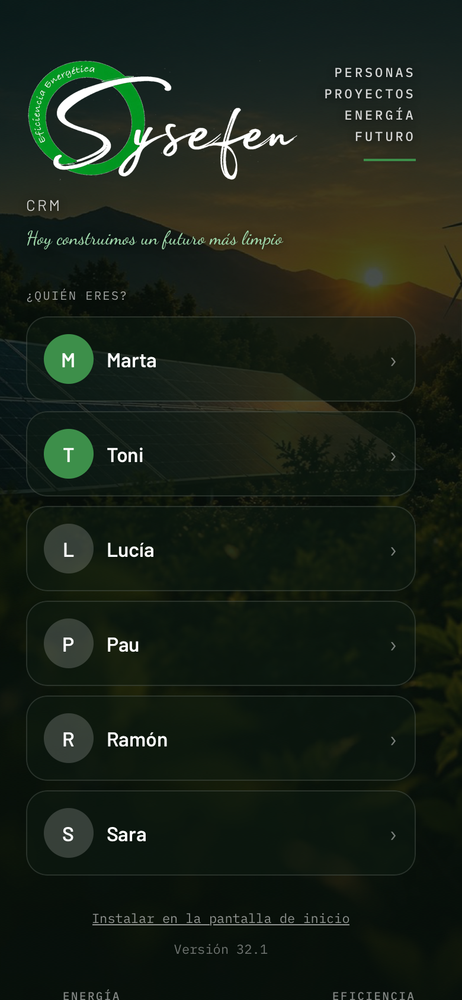
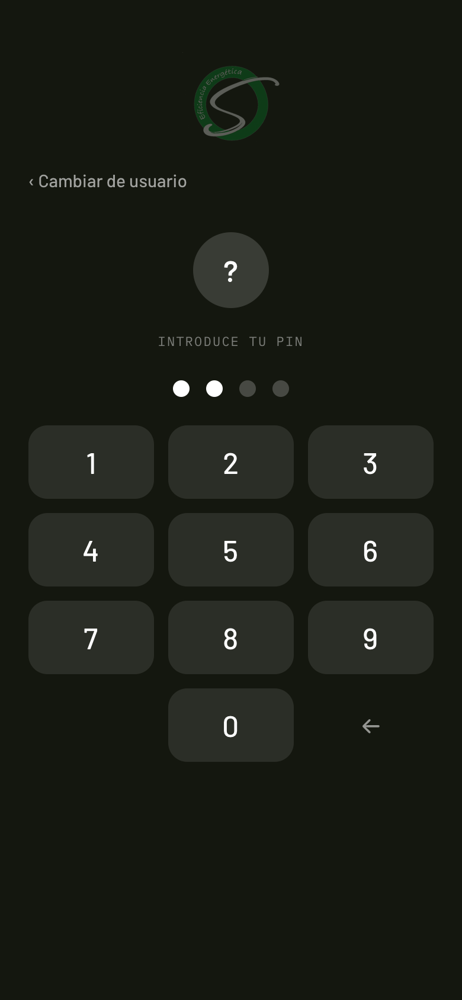
Instalar en el móvil
En el ordenador (y en el navegador del móvil) hay un icono junto a la marca Sysefen para abrir la app en otra pestaña: sirve para tener dos pantallas a la vez, por ejemplo dos presupuestos uno al lado del otro.
Cuando hay versión nueva
La app se mejora a menudo. Cuando hay una versión nueva, al abrirla sale un cartel oscuro que tapa la pantalla con un solo botón: Actualizar. Púlsalo. Tarda un segundo, no se pierde nada de lo guardado y así todo el equipo trabaja con la misma versión.
El cartel también sale si tenías la app abierta en segundo plano y la vuelves a abrir. No se puede seguir sin actualizar: es a propósito.
Si estás a medias de algo (un parte, el alta de una obra, una visita, un reparto de horas, un presupuesto o una ventana abierta), el cartel espera y sale cuando vuelves a una pantalla normal. El parte a medias, además, se guarda en el móvil a cada cambio: si la app se cierra, al volver lo recuperas.
Qué ve cada usuario
Las pestañas de abajo cambian según quién eres. Nadie ve más de lo que necesita.
| Pestaña | Operario | Jefe de obra | Presupuestos | Administración |
|---|---|---|---|---|
| Hoy · fichar, resumen del día | Sí | Sí, con el equipo | — | Sí, sin fichar |
| Obras · ficha, proyecto, planificación | Ver, y marcar avance | Crear y editar | Crear, editar, planificar | Todo, y planificar |
| Partes de trabajo | El de su obra de hoy, desde Hoy | Crear, firmar, enviar | Ver | Todos |
| Horas | Las suyas | Imputar al equipo | — | Revisar y corregir |
| Economía de la obra y costes de personal | — | — (pone albaranes y gastos) | Sí | Sí |
| Empleados y planillas | — | — | — | Sí |
| Agenda, clientes, visitas | — | — | Sí | Ver citas |
| Presupuestos, envío al cliente y firma | — | — | Sí | Sí |
| Facturas | — | — | Pestaña propia | Desde Ajustes |
| Precios de la base de datos | — | — | Desde Perfil | Desde Ajustes |
| Lista de compra de la obra | — | Ver | Sí | Sí, y a quién llega |
| Perfil / Ajustes | Perfil | Ajustes | Perfil + Teamleader | Ajustes de la empresa |
Hay un quinto tipo de usuario, el colaborador: trabaja como presupuestos, pero solo con los clientes que se le asignan. Está más abajo.
Operario Tu día a día
Tu trabajo en la app son tres cosas: fichar al entrar y al salir, ver a qué obra vas hoy y mañana, y hacer el parte de tu obra al acabar. Lo demás lo llevan tu jefe y presupuestos.
Fichar
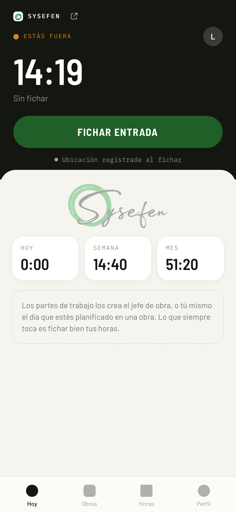
Hoy, antes de fichar
Arriba, en oscuro, la hora y Fichar entrada. Se guarda la hora exacta y, si está activado, dónde estabas al fichar.
Debajo: tus horas de hoy, esta semana y este mes.
- Ficha al llegar a la obra y al irte, no antes ni después.
- Si se te olvida, avisa a tu jefe o a Administración: ellos lo pueden corregir.
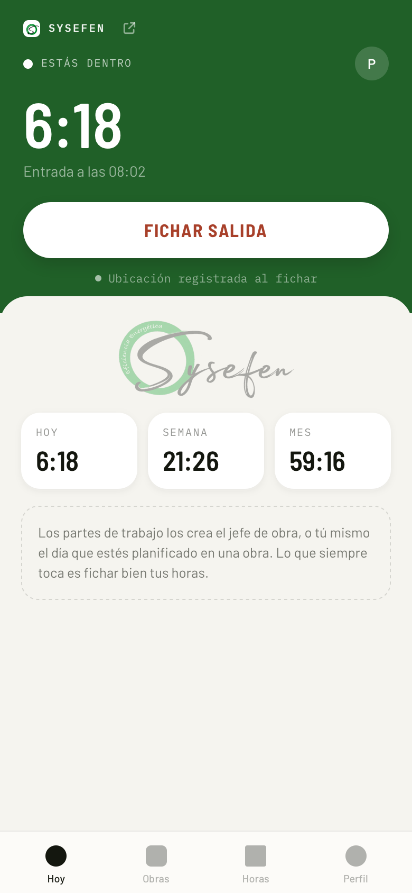
Hoy, dentro
La pantalla se pone verde y el reloj cuenta desde tu entrada. Al terminar, Fichar salida.
Si te vas a comer y vuelves, ficha salida y entrada otra vez: cada tramo cuenta.
Tu obra de hoy y el parte
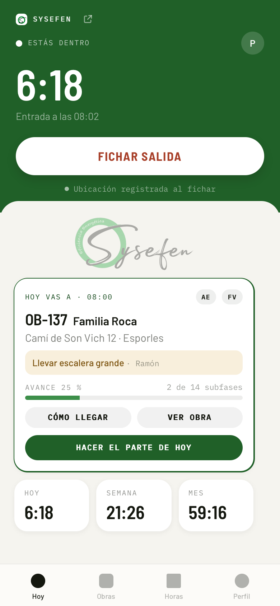
Hoy vas a…
Debajo del fichaje, la tarjeta de la obra que te han planificado: el código (OB-137), el cliente, la calle y la población, la hora prevista y, en ámbar, la nota de quien te la asignó («llevar escalera grande»). Cómo llegar abre el mapa; Ver obra, su ficha. Si mañana ya está planificado, también lo ves.
Hacer el parte de hoy: el parte sale con la obra, la fecha y tus horas del fichaje ya puestas. Tú escribes los trabajos, el material si lo hubo, marcas hasta dónde queda cada fase de la obra, y el cliente firma.
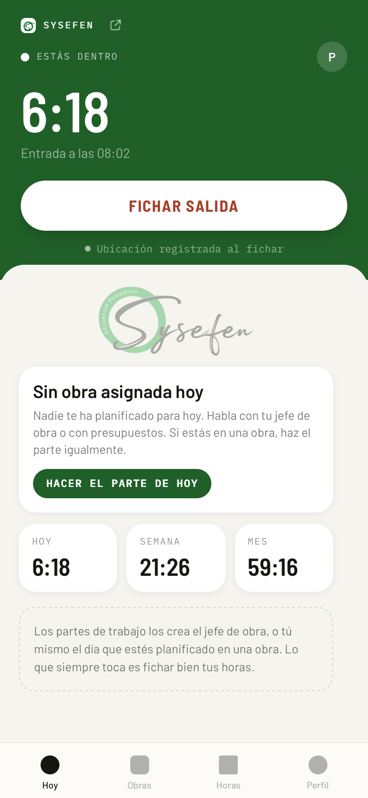
Sin obra asignada
Si nadie te ha planificado, la tarjeta lo dice: habla con tu jefe de obra o con presupuestos. Si de todos modos estás en una obra, Hacer el parte de hoy te deja elegirla.
Si tenías una obra planificada y haces el parte de otra, la app te avisa («Esta no era tu obra de hoy») y te pregunta si estás seguro. Puedes seguir: quien planifica lo verá y lo apuntará.
Obras y horas
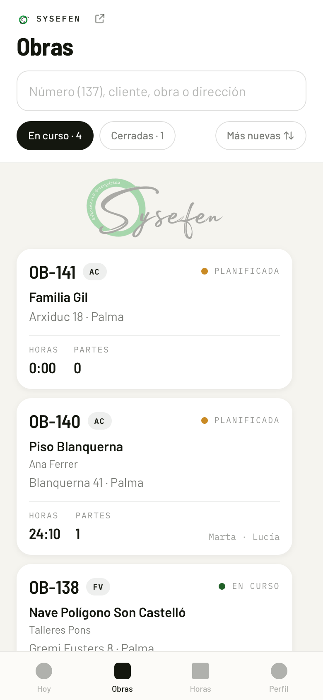
Obras
Las obras en curso, cada una con su código OB-137, el cliente, la dirección, las horas que lleva, los partes y el avance: un dibujo de la obra (la furgoneta con el material camino de la casa) con el porcentaje y cuántas subfases van hechas. Las cerradas, en su pestaña. Buscador por número («137»), cliente o calle. Toca una para ver su ficha y el proyecto con sus fases.
No hace falta elegir obra para fichar: las horas se reparten después.
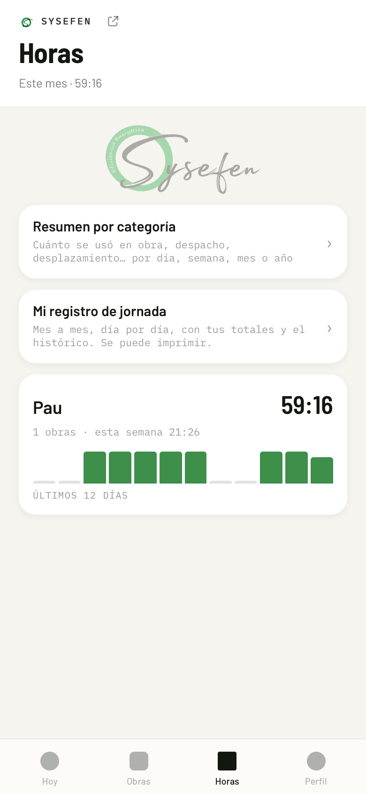
Horas
Tus horas del mes y de los últimos 12 días, en barras. Desde aquí:
- Mi registro de jornada: mes a mes, día por día, con tus totales. Es tu comprobante; se puede imprimir.
- Resumen por categoría: cuánto fue obra, despacho, desplazamiento…
Perfil
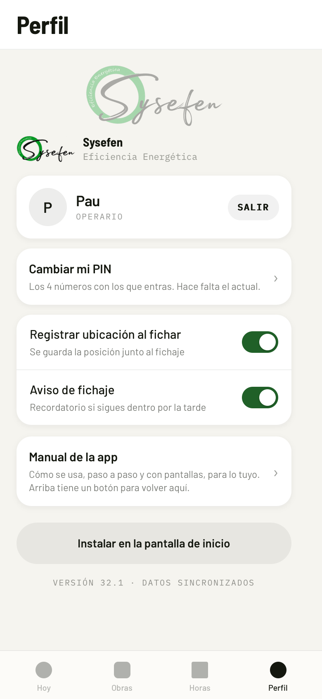
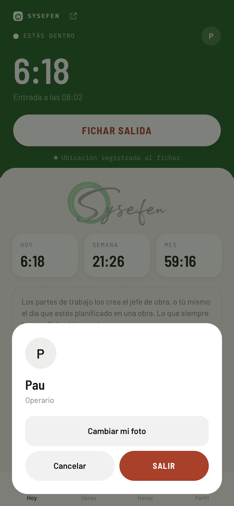
Jefe de obra Tu día a día
Haces lo mismo que un operario (fichar, horas, ver a dónde vas hoy y mañana) y además llevas las obras y su proyecto, los partes de trabajo que firma el cliente, y el reparto de horas del equipo entre obras. La planificación de quién va a dónde la hace la oficina.
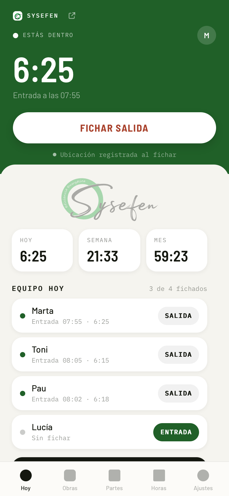
Hoy, con el equipo
Además de tu fichaje, ves quién está dentro ahora y desde qué hora, y puedes fichar la Salida a quien se haya olvidado.
Abajo, Nuevo parte: el atajo para hacer el parte del día.
Obras
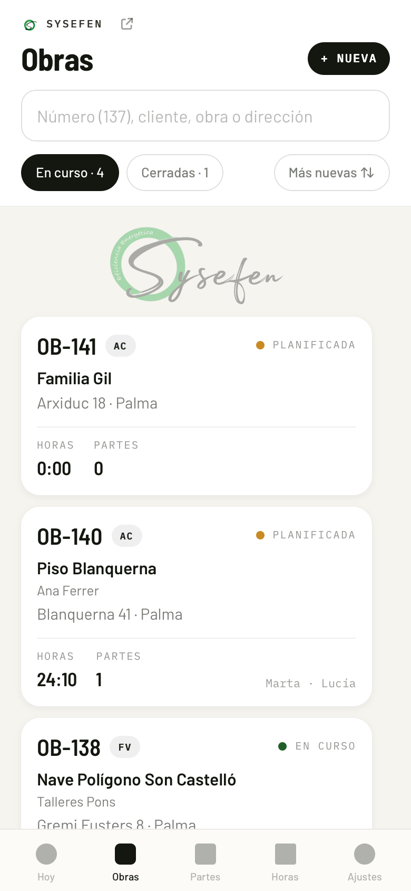
La lista
Cada obra con su código (OB-137), lo que lleva (AE aerotermia, FV fotovoltaica, AC aire, EL instalación eléctrica, BAT baterías, CC cargador de coche u otro con el nombre que le pongas), su estado, el cliente y la calle · población en grande, las horas, los partes y el avance. Las más nuevas arriba; A-Z cliente cambia el orden. En curso y Cerradas en dos pestañas.
El buscador entiende el número («137», «OB-137»), el cliente, la obra o la dirección. + Nueva para crear una.
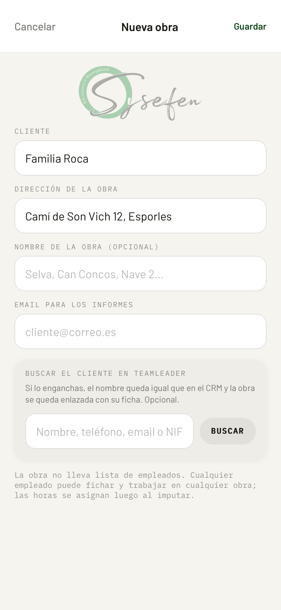
Crear una obra
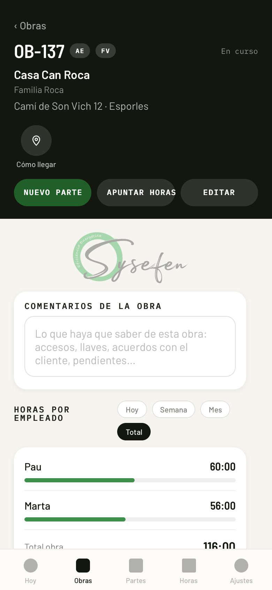
La ficha de la obra
- Arriba, el código, las categorías, el estado, el cliente y la dirección. Cómo llegar abre el mapa. Nuevo parte, Apuntar horas y Editar.
- Comentarios de la obra: lo que haya que saber (accesos, llaves, acuerdos con el cliente, pendientes). Se escriben y se guardan ahí mismo.
- Horas por empleado: hoy, semana, mes o total. Imprimir PDF y Exportar CSV del reparto.
- Proyecto: las fases de la obra con su porcentaje (ver más abajo).
- Lista de compra: qué hay que pedir y a quién, sumando todos los presupuestos aceptados de la obra. Ver lista de compra abre el PDF.
- Albaranes y recibos: foto o PDF de lo que se compra para esa obra, con importe. Cada uno con importe cuenta como gasto de la obra. Lo ven jefes, presupuestos y Administración.
- Partes de esta obra. Si un parte se hizo en la obra equivocada, Cambiar de obra lo lleva a la buena.
- Abajo: Marcar obra como cerrada (pasa a la pestaña Cerradas), Mover todos los partes a otra obra y Borrar obra, solo si está vacía, sin partes ni horas: para las que se crearon dos veces.
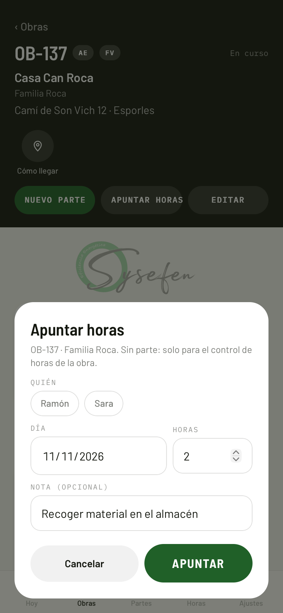
Apuntar horas sin hacer parte
Apuntar horas sirve para dejar horas en la obra cuando no hay parte: recoger material, una visita corta, una gestión. Eliges quién, el día, las horas y una nota. Cuentan en las horas de la obra y en su coste, pero no generan parte ni le llegan al cliente.
El proyecto: fases y avance
Cada obra tiene sus fases según lo que lleva: pedido y recepción de material, replanteo; en fotovoltaica fijaciones y estructura, montaje de paneles, cableado de continua, inversor y baterías, alterna y protecciones, puesta en marcha, legalización; en aerotermia y aire las suyas; y al final el cobro. Dentro de cada categoría van sus subfases, y se pueden añadir fases propias («Fontanería», «Piscina») con las suyas. Cada una tiene un porcentaje y la obra un avance global, la media de todas. Así se sabe dónde está parada cada obra sin preguntar.
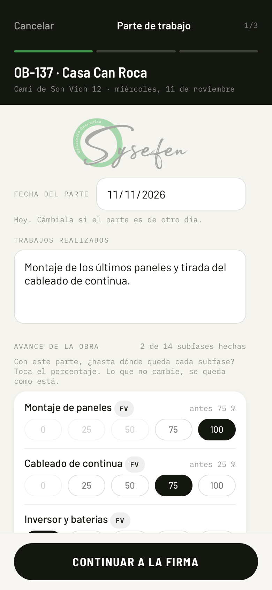
Desde el parte
Al hacer el parte, después de los trabajos, sale Avance de la obra con las fases pendientes y sus chips 0 · 25 · 50 · 75 · 100 en el valor que tenían. Toca hasta dónde queda cada una con lo hecho hoy («fijaciones al 100, paneles al 75»). Lo que no toques se queda igual.
Al guardar, el parte deja apuntado el antes y el después de cada fase: cada parte cuenta lo que avanzó.
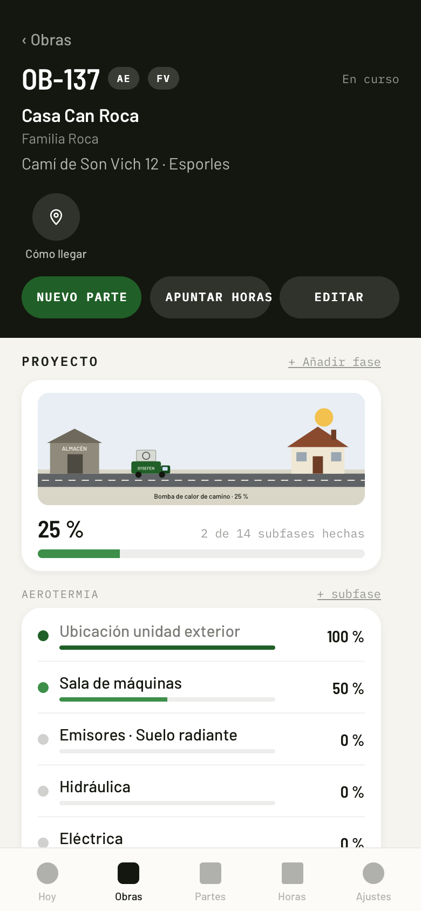
Desde la ficha
En Proyecto, el dibujo de la obra con el avance global y, debajo, las fases por grupos (Preparación, Fotovoltaica, Aerotermia, Aire, Cierre). Toca una para cambiar su porcentaje, ponerle una nota («falta la bancada, viene el lunes»), marcarla como no aplica o quitarla. + subfase añade una dentro del grupo; + Añadir fase crea un grupo nuevo: zanja, andamio, fontanería…
Si al editar la obra le quitas una categoría, se van sus fases sin avance; si le añades otra, nacen las suyas.
Planificar la semana (lo hace la oficina)
La planificación la hacen presupuestos y Administración. Como jefe no planificas: ves en Hoy a dónde vas hoy y, a partir de las 14:00, a dónde vas mañana, igual que los operarios. Esto es lo que hace la oficina:
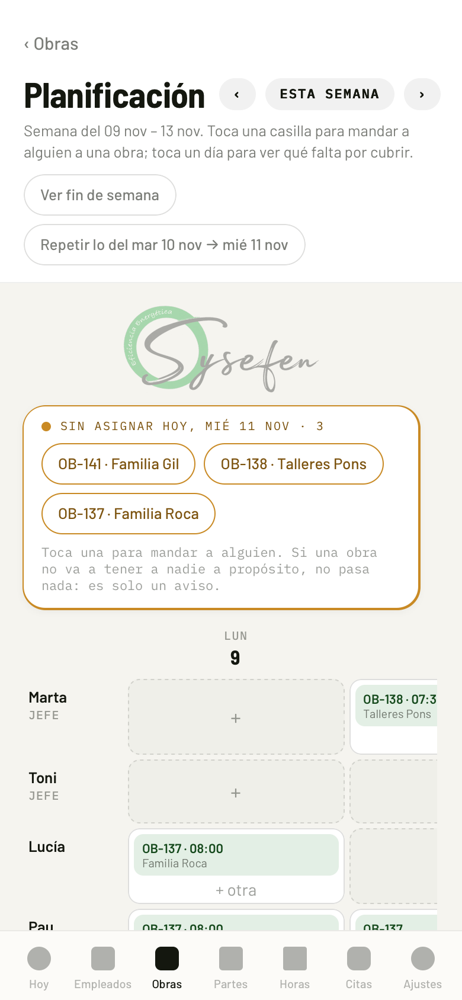
El tablero
Desde Obras → Planificar semana. Filas, las personas (operarios y jefes); columnas, los días. En cada casilla, las obras a las que va esa persona ese día. Flechas para cambiar de semana; Ver fin de semana si hace falta.
- Toca una casilla vacía: eliges la obra (primero las que no tienen a nadie ese día) y a quién más mandas con ella; la app te propone a quien suele ir. Hora prevista y una nota.
- La franja ámbar Sin asignar del día que toques arriba: las obras en marcha a las que no va nadie. Toca una para cubrirla.
- Repetir lo del último día para todos de un toque. En cada asignación: cambiar hora y nota, copiar al día siguiente, quitar.
- Una persona puede ir a más de una obra el mismo día: en su casilla, + otra.
- La franja roja Partes fuera de plan: partes hechos en una obra donde esa persona no estaba planificada ese día. «Era correcto · apuntar» lo deja planificado; «Ignorar» lo da por visto.
Partes de trabajo
Un parte es el documento que dice qué se hizo un día en una obra, quién estuvo y cuántas horas, con la firma del cliente. Se manda por correo en PDF y queda guardado.
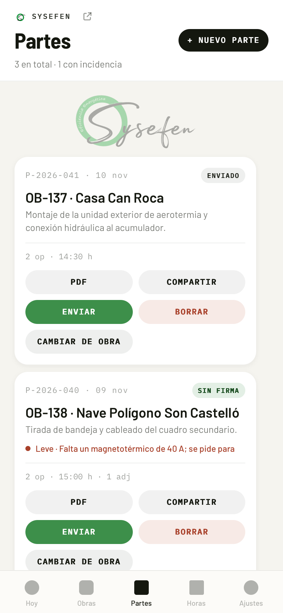
La lista
Cada parte con su número, fecha, obra, cuántos operarios y horas, y su estado: Firmado, Sin firma (el cliente no estaba), Enviado o Anulado. Si hubo incidencia, sale en rojo.
Botones: PDF, Compartir, Enviar por correo, Borrar y Cambiar de obra, por si se hizo en la que no era.
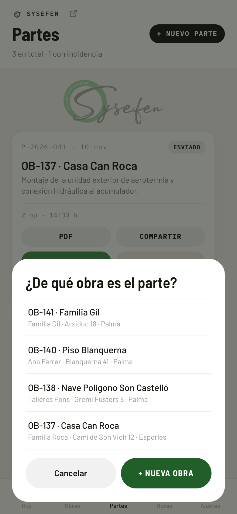
Crear un parte · elegir la obra
Al pulsar + Nuevo parte, primero eliges de qué obra es: las planificadas hoy salen primero con la etiqueta «hoy». Buscador por número, cliente u obra; si la obra no existe, + Nueva obra la crea sin salir del parte. Desde la ficha de una obra, el parte ya sale con ella.
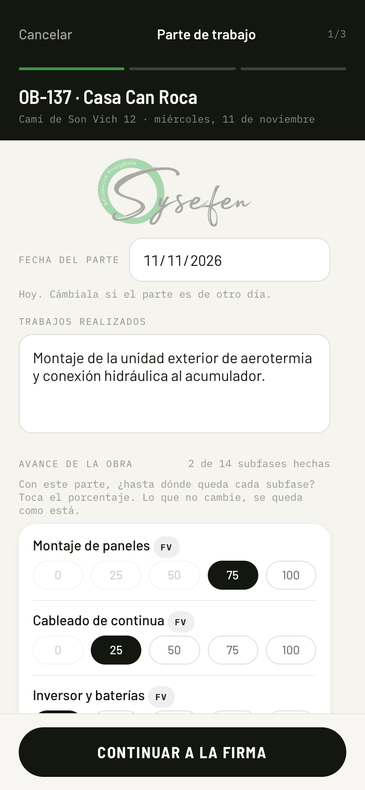
Paso 1 de 3 · El trabajo
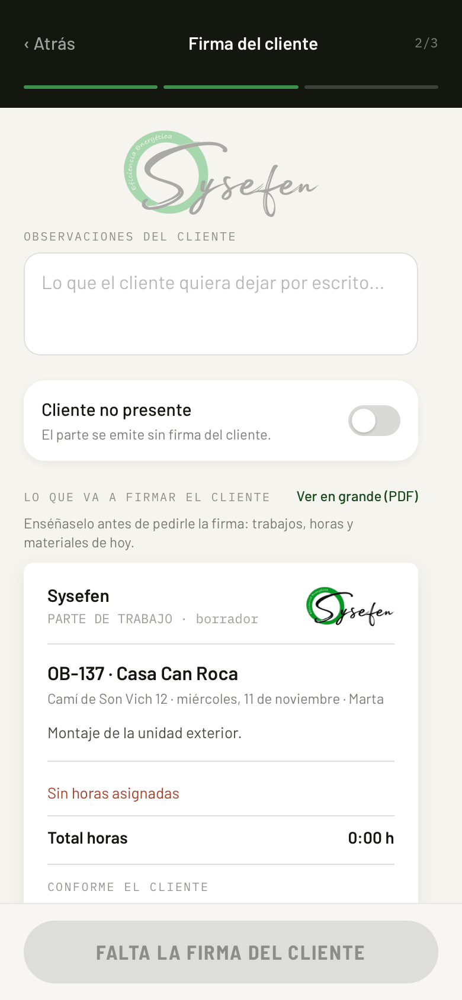
Paso 2 de 3 · La firma del cliente
El cliente puede escribir sus observaciones y, antes de firmar, ve el parte entero: trabajos, horas, materiales e incidencias, con «Firma pendiente» en su casilla. Ver en grande (PDF) se lo enseña a pantalla completa. Después pones su nombre y firma con el dedo en el recuadro.
Si el cliente no está, activa Cliente no presente: el parte sale sin su firma y lo dice, y no se enseña nada.
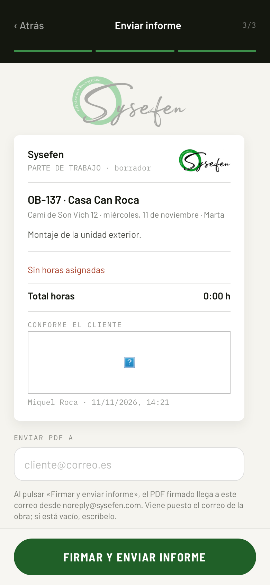
Paso 3 de 3 · Enviar
Ves el parte como quedará en PDF. Pon o comprueba el correo del cliente (viene el de la obra) y pulsa Firmar y enviar informe.
El PDF firmado le llega desde noreply@sysefen.com, con copia a la gestoría si Administración la ha puesto. El parte pasa a Enviado.
Si no hay cobertura, se guarda y lo envías después desde la lista.
Horas e imputaciones
Fichar dice cuándo se trabajó. Imputar dice en qué: en qué obra, en el despacho, desplazándose… Es lo que luego permite saber qué costó cada obra.
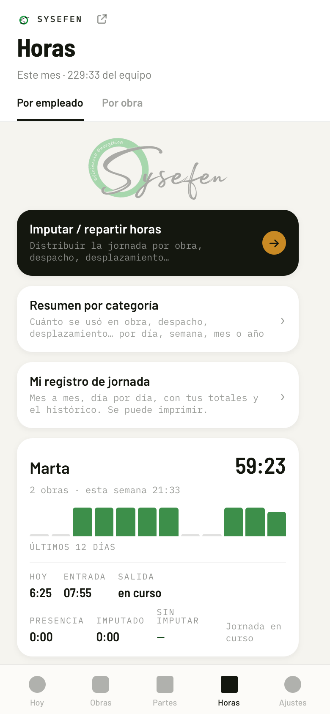
Horas · por empleado
Para cada persona: horas del mes, últimos 12 días, y hoy: entrada, salida, presencia, imputado y sin imputar. Lo que queda sin imputar es lo que hay que repartir.
Arriba, Imputar / repartir horas.
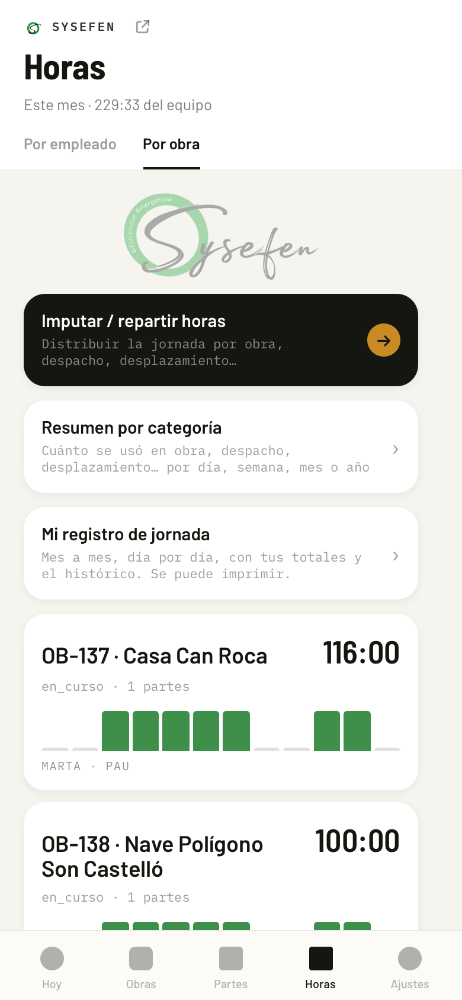
Horas · por obra
La otra vista: cuántas horas lleva cada obra y de quién. Es lo que se compara con el presupuesto.
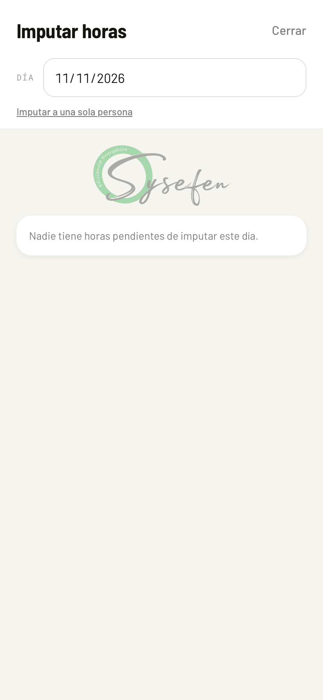
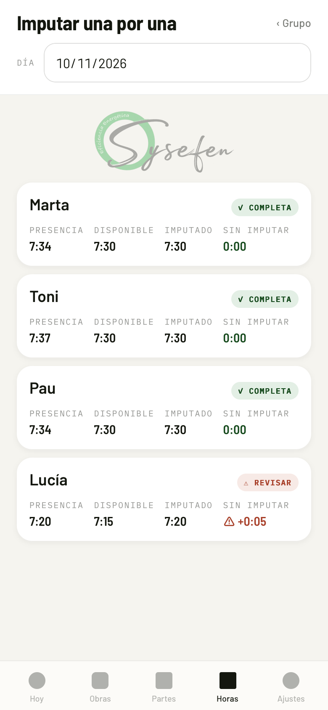
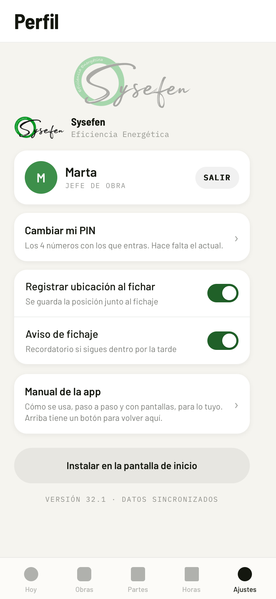
Presupuestos Tu día a día
Tu trabajo empieza con un cliente que pide presupuesto, sigue con una cita, una visita en la que tomas los datos y el presupuesto, que sale del motor de la app. Desde la app se lo envías al cliente, que lo acepta y lo firma en línea; al aceptarlo nace la obra y, cuando toca, la factura. Todo queda también en Teamleader. No fichas ni haces partes.
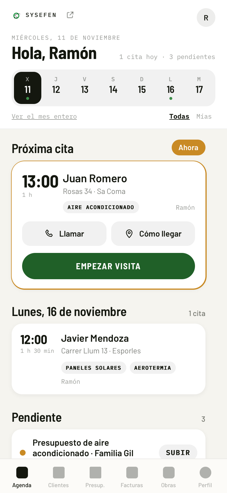
Agenda · hoy primero
- La tira de la semana: puntos en los días con cita. Toca un día para ver solo sus citas; Ver el mes entero abre el calendario.
- La próxima cita, en grande: Llamar, Cómo llegar y Empezar visita, que abre la toma de datos con el cliente ya puesto. Debajo, el resto de citas, día por día. Todas / Mías filtra si sois varios.
- Pendiente: visitas cerradas sin enviar, presupuestos sin subir a Teamleader, clientes sin cita, las próximas acciones que tocan hoy o están vencidas y los clientes aplazados que vuelven esta semana. Cada línea abre justo eso.
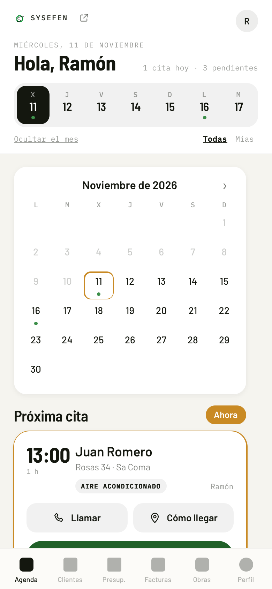
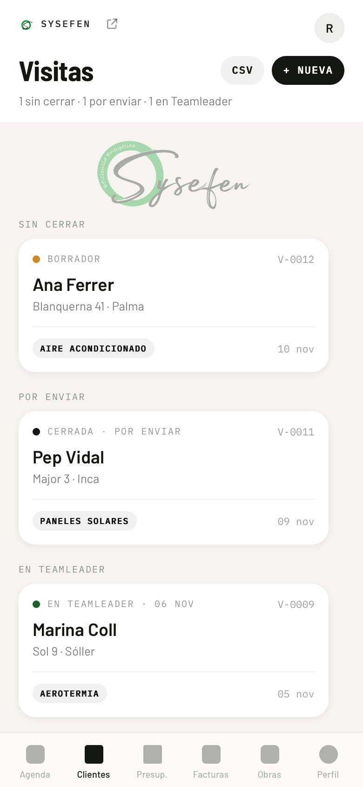
Clientes y seguimiento
Los clientes se ven de dos maneras: en tablero, que es como salen al entrar, o en lista. El botón de arriba cambia de una a otra y cada aparato recuerda la que dejaste. ↻ trae al momento lo que haya pasado en Teamleader.
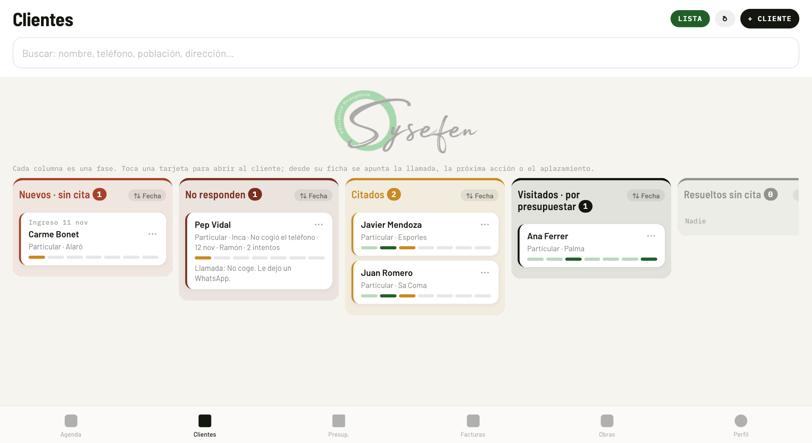
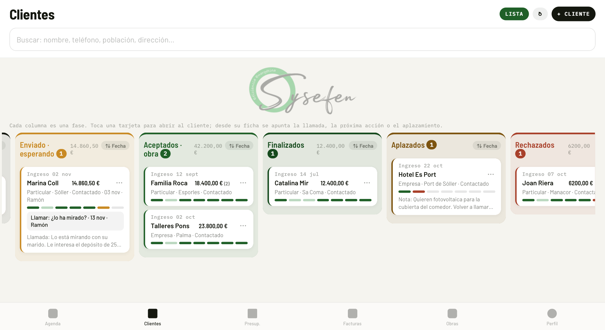
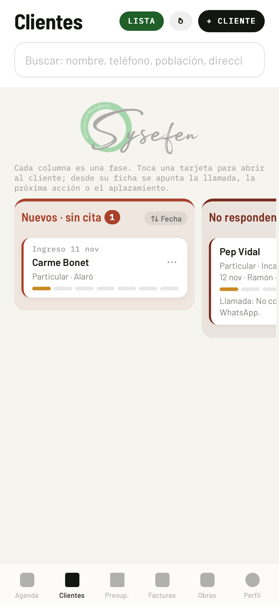
Cómo se lee y cómo se mueve
- La tarjeta lleva la fecha de ingreso, el nombre, el importe (si tiene varios presupuestos aceptados, la suma, con el número entre paréntesis), la próxima acción y lo último que se habló.
- La barrita de siete tramos es el camino del cliente: contacto, cita, visita, presupuesto, enviado, respuesta y obra. Verde, hecho; ámbar, lo que toca ahora; rojo, donde se paró (rechazado o aplazado).
- Las columnas se deducen solas de lo que ha pasado: al poner una cita pasa a Citados, al guardar el presupuesto a Presupuesto, al aceptarlo a Aceptados, y cuando todas sus obras están acabadas, a Finalizados.
- Para colocarlo a mano, arrastra la tarjeta a otra columna o toca ⋯ → Mover a. La app pide lo que esa fase necesita: el porqué, hasta cuándo se aplaza… No responden, Rechazados sin presupuesto, Finalizados y Otros se ponen así.
- ↑↓ Fecha ordena la columna por fecha de ingreso; también se puede subir o bajar un cliente a mano.
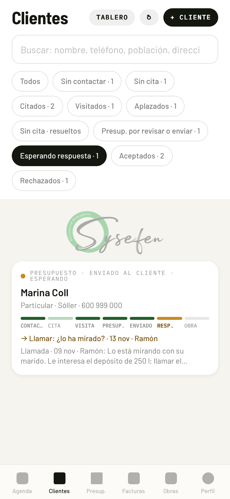
En lista
Los mismos clientes, uno debajo de otro, con filtros por fase y cuántos hay en cada una: sin contactar, sin cita, citados, visitados, aplazados, presupuesto por revisar o enviar, esperando respuesta, aceptados, rechazados. Sin contactar es el que hay que mirar cada mañana.
Los que llegan de la web entran solos, sin cita, y salen arriba con lo que pidieron en el formulario y Mirar ahora. En cada uno: Contactado, No cogió, Citar y No hace falta (para cerrarlo sin cita: ya tiene obra, solo era una consulta, se presupuesta sin ir a verlo…).
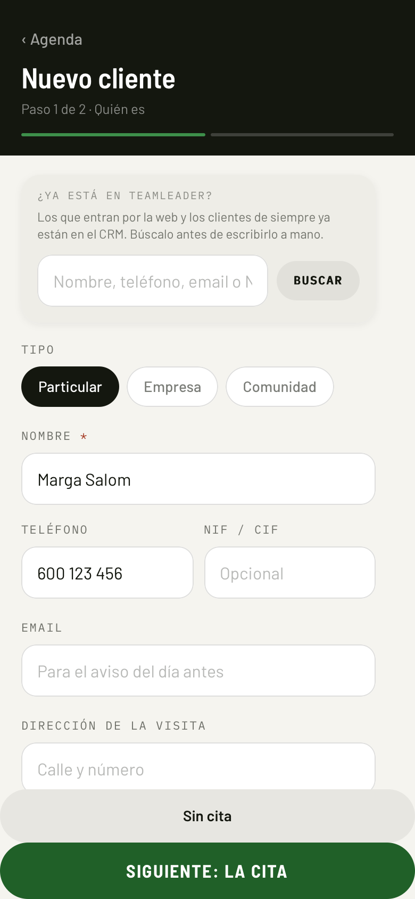
Dar de alta un cliente
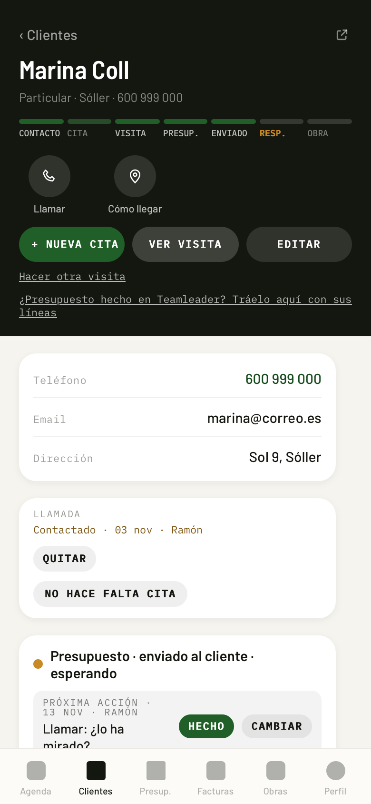
La ficha del cliente
- Arriba, el nombre, el camino con sus siete pasos y los botones: Llamar, Cómo llegar, + Nueva cita, Editar y el de la visita, que cambia según el momento: Hacer visita (empieza la toma de datos sin pasar por una cita), Seguir la visita o Cerrar la visita si está a medias, y Ver visita cuando ya está hecha.
- Si el cliente tiene obra, un botón verde Ver obra OB-137 · En curso · 35 % y, debajo, la tarjeta de sus obras con el avance.
- ¿Presupuesto hecho en Teamleader? Tráelo aquí con sus líneas: trae todas las ofertas que tenga en el CRM.
- Documentos del cliente: la factura de la luz, el DNI, planos… Foto o PDF. Los ven presupuestos, jefes y Administración.
- Qué pidió por la web, si entró por el formulario; si lleva alguien de fuera, la tarjeta Colaborador para asignárselo.
- El historial: citas, visitas y presupuestos, en orden. Al abrir uno y volver, vuelves a la ficha.
Abajo, Borrar cliente: solo si no tiene visitas ni presupuestos.
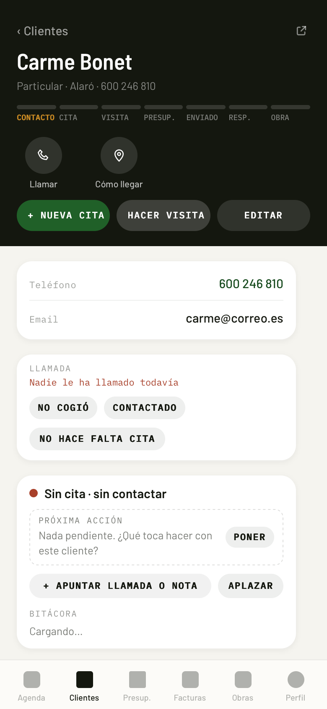
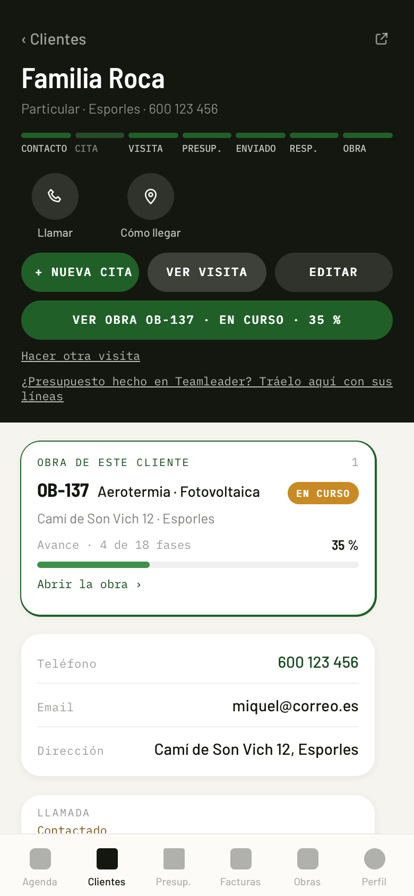
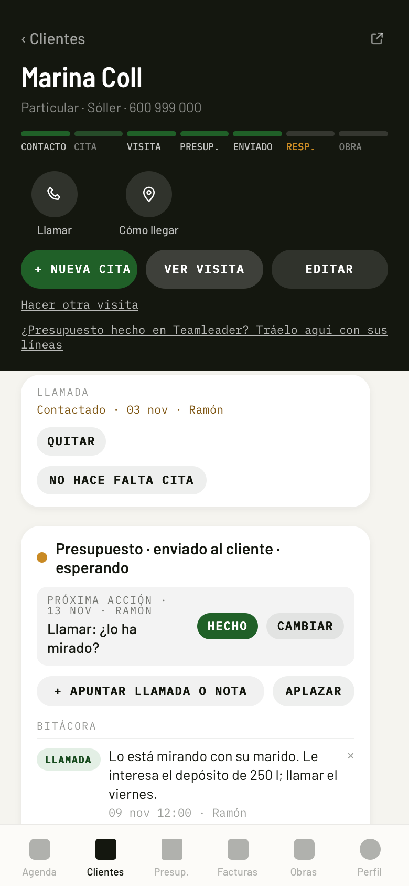
El seguimiento: llamadas, próxima acción y bitácora
- Llamada: Contactado o No cogió. Queda quién llamó, cuándo y cuántos intentos. Con «No cogió» y sin cita pendiente, el cliente pasa solo a No responden. Quitar lo deshace.
- Próxima acción: qué toca hacer con este cliente, qué día y quién («Llamar: ¿lo ha mirado? · 13 nov · Ramón»). Sale en su tarjeta del tablero y, el día que toca, en Pendiente de la agenda; en rojo si se pasa. Hecho la cierra.
- + Apuntar llamada o nota: una llamada, un WhatsApp, un correo o una nota suelta.
- Aplazar: hasta una fecha y con el porqué («lo retoman en enero»). El cliente pasa a Aplazados y vuelve a la agenda una semana antes.
- La bitácora junta todo eso con lo que la app apunta sola: citas, visitas, presupuestos enviados, respuestas.
Citas
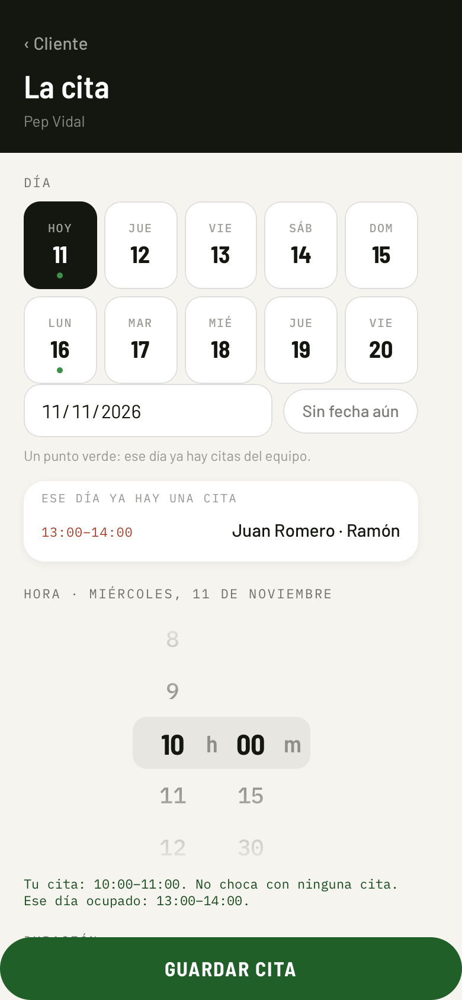
Poner una cita
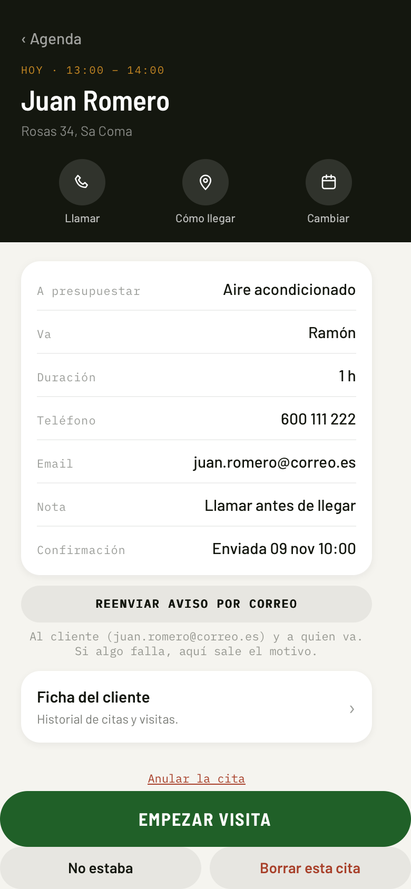
La ficha de la cita, y los correos
Todo lo de la cita y tres acciones: Llamar, Cómo llegar y Cambiar. Abajo: Empezar visita, No estaba y Borrar esta cita; Anular la cita es el enlace pequeño de encima.
Los correos al cliente salen solos: la confirmación al crear la cita, el recordatorio 24 horas antes, el cambio si se mueve y la anulación si se anula. Llevan un botón para añadirla a su calendario. La ficha dice cuándo salió cada uno.
Si algo falla (el cliente no tiene email, por ejemplo), la app lo dice en rojo. Reenviar aviso por correo lo vuelve a mandar y enseña el motivo si no puede.
Visitas: la toma de datos
La visita es donde tomas en casa del cliente todo lo que hace falta para presupuestar: el inmueble, la instalación que tiene, lo que quiere, fotos y medidas. Va en 5 pasos y se guarda sola en el móvil mientras la haces, con o sin cobertura. Arriba a la derecha, Guardar y cerrar sale guardando lo que lleves y Cancelar descarta lo de ahora (si la visita ya estaba guardada, la borra con sus fotos, y antes pregunta).
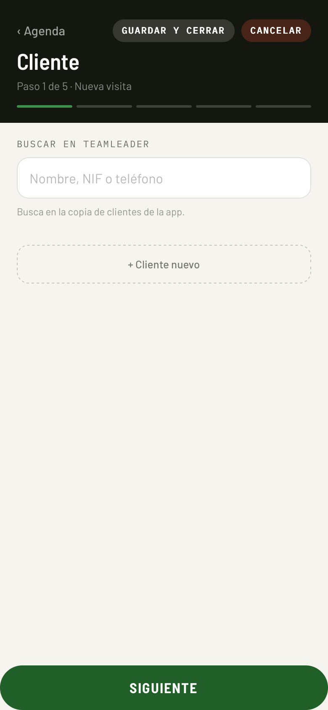
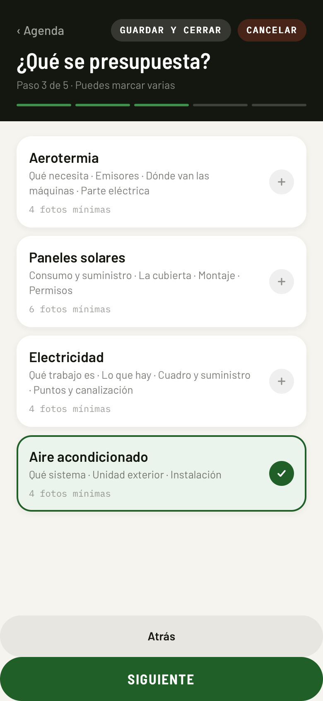
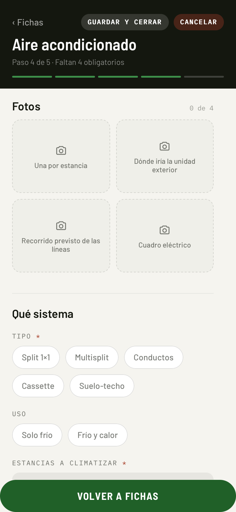
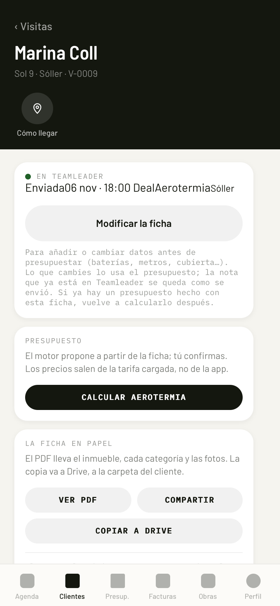
5 · Cierre, y después
Al cerrar la visita la app pregunta si le mandas al cliente el correo de gracias (no lleva ningún dato de los que tomaste). Si dices que no, el botón queda en la ficha para mandarlo después. La visita sube a Teamleader como oportunidad, con sus fotos.
En la ficha de una visita ya cerrada:
- Modificar la ficha: para añadir o cambiar datos antes de presupuestar (baterías, metros, cubierta…), también si ya está en Teamleader.
- Calcular… un presupuesto de cada oficio con la ficha. Si la visita tiene varias fichas, pueden ir en un presupuesto conjunto, cada instalación en su bloque con su suma.
- Ver PDF y Compartir la ficha en papel, y Copiar a Drive: el PDF y las fotos a la carpeta del cliente.
- Las fotos, en rejilla; al tocar una se abren de una en una, con flechas.
Una visita sin cerrar se retoma desde la ficha del cliente (Seguir la visita) o desde la lista de visitas, en Sin cerrar.
Presupuestos
El presupuesto lo propone el motor a partir de los datos y de las tarifas cargadas (Vaillant, Saunier Duval, Midea, Fronius, Deye, Enphase, BYD, Tesla…). Tú lo revisas, cambias lo que haga falta y lo guardas. Al guardar sube solo a Teamleader.
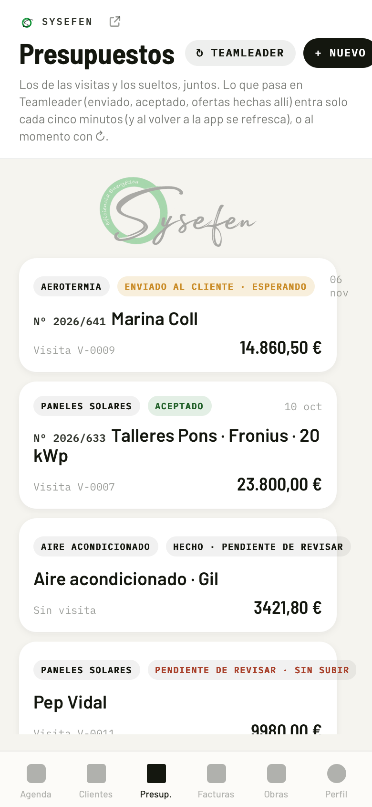
La lista
Los de las visitas y los sueltos, juntos: oficio, estado, cliente, visita si la hay e importe sin IVA. Pendiente de revisar significa que aún no le has dado el visto bueno; si al motor le faltó algún dato, al abrirlo salen los avisos.
Lo que pasa en Teamleader (enviado, aceptado, rechazado, ofertas hechas allí) entra solo cada cinco minutos y al volver a la app; ↻ Teamleader lo trae al momento. + Nuevo hace un presupuesto suelto, sin visita.
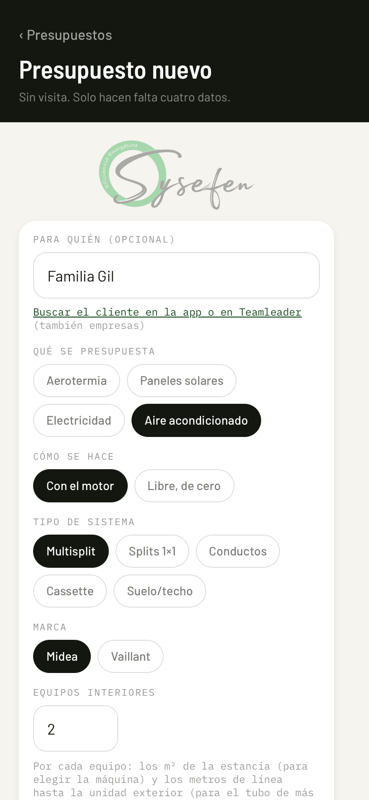
Presupuesto suelto
Antes de guardar: lo que se puede cambiar
- Editar cualquier línea: concepto, descripción larga, cantidad, precio, descuento y, para quien ve costes, el coste y el margen. El motor respeta el retoque si vuelves a calcular.
- Quitar una línea: queda en una lista abajo, Quitadas de este presupuesto, de donde se recupera.
- Añadir del catálogo: el buscador encuentra por palabras en cualquier orden («arotherm 8») o por referencia. Lo que no exista se crea ahí mismo como producto nuevo y queda en el catálogo para la próxima vez.
- Descuento al pie, en tanto por ciento, y Aplicar.
- Debajo del total, coste, beneficio y margen: lo ven presupuestos y Administración, nunca el cliente.
Fotovoltaica: varias opciones para el mismo cliente
En un presupuesto de paneles, encima de las líneas hay un bloque de opciones que recalcula sin tocar la ficha de la visita:
- Opción con Fronius, Deye o Enphase.
- Inversor: el que elige el motor («Automático») o uno concreto del desplegable.
- Paneles: los calculados o los que pongas a mano. Grúa: las horas de camión grúa, si hace falta.
- Batería: sin batería o la marca compatible con ese inversor, los kWh y, si quieres, el modelo.
Para darle al cliente dos o tres opciones: guarda esta, cambia de marca o de batería y guarda la siguiente. Cada una es un presupuesto aparte, con la marca, los kWp y la batería en el título, y una oferta aparte en Teamleader. En aerotermia pasa lo mismo con la marca: Vaillant o Midea.
La línea de la instalación fotovoltaica se puede abrir para ver y editar sus partidas (cantidad, coste, nombre), quitar alguna o añadir una a mano.
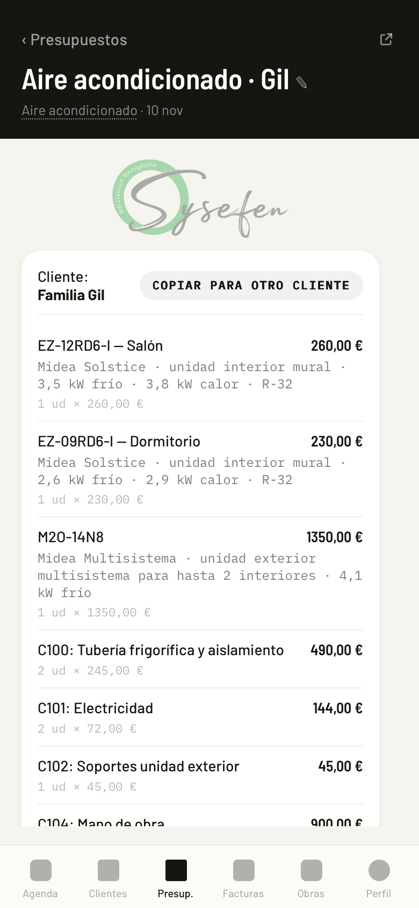
La ficha de un presupuesto guardado
- El título se cambia tocándolo (✎) y la categoría, tocándola debajo.
- Cliente: si no tiene, Asignar cliente; si tiene, Copiar para otro cliente hace un presupuesto nuevo con las mismas líneas para otro.
- Las líneas con cantidad, precio y, en las máquinas, su detalle técnico; el total y, debajo, coste y margen.
- Idioma del PDF: español, inglés, catalán o alemán. Las líneas se traducen al preparar el PDF.
- PDF lo enseña, Descargar PDF lo baja con su nombre. Lleva siempre las condiciones generales y el bloque de aceptación.
- Modificar: cambia concepto, descripción larga, cantidad, precio, descuento por línea, coste o margen; quita líneas o añade otras del catálogo o a mano. Si el presupuesto está en Teamleader, la oferta de allí se actualiza.
- Lista de compra (qué habría que pedir) y Abrir aparte, para tenerlo en otra ventana y comparar dos.
Enviar, firmar y aceptar
Debajo de las líneas, la ficha lleva el seguimiento del presupuesto: creado, en Teamleader, revisado, enviado al cliente, validez y respuesta. Ahí se hace cada paso.
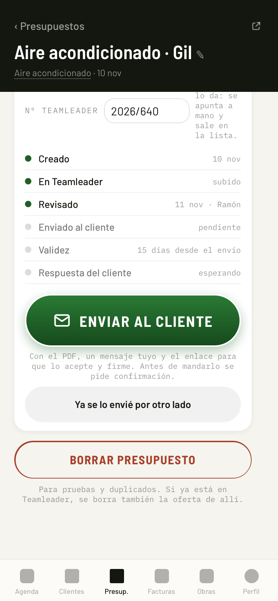
Revisar y enviar
Nº Teamleader: el número de la oferta (2026/640) se escribe a mano y sale en la lista.
El correo al cliente
- Idioma del PDF y del correo: español, inglés, catalán o alemán. En otro idioma, tu asunto y tu mensaje se traducen y los ves antes de confirmar.
- Para (viene el correo del cliente), copia, asunto y tu mensaje.
- Si el cliente tiene más presupuestos sin contestar, puedes marcar varias opciones para mandarlas juntas: cada una con su PDF y su enlace.
- Revisar y enviar pide confirmación antes de mandar nada.
El correo sale de noreply@sysefen.com con el PDF adjunto y un botón Ver y aceptar este presupuesto.
Lo que hace el cliente
El botón del correo le abre una página de Sysefen con su presupuesto, en su idioma. Puede verlo, descargarlo y, si está conforme, aceptarlo y firmarlo ahí mismo: escribe su nombre y su DNI, NIE o CIF (es obligatorio) y firma con el dedo o el ratón.
Cuando acepta
- El presupuesto queda aceptado y firmado en línea, con quién firmó y cuándo. PDF firmado lo abre; también llega por correo y se guarda en Drive.
- En Teamleader la oferta pasa a aceptada.
- La obra se crea sola, con el cliente, la dirección y la categoría: Ver la obra OB-141. Si el cliente ya tenía una obra abierta, el presupuesto se suma a ella y el proyecto crece con sus fases.
- A la oficina le llega por correo la lista de compra: el material a pedir, por proveedor, de todos los presupuestos aceptados de esa obra.
- El cliente pasa a Aceptados en el tablero.
Si te lo acepta de palabra, marca Aceptó en ¿Qué dijo el cliente? (sale cuando el presupuesto consta como enviado) y pasa lo mismo, sin firma. Rechazó deja escribir el porqué; Caducó, si lo dejó pasar.
Borrar presupuesto, al final de la ficha, lo borra con sus líneas y, si estaba en Teamleader, borra también la oferta de allí. No se puede recuperar.
Facturas
Las facturas se componen en la app y las emite Teamleader, que es quien les pone el número. En la pestaña Facturas están todas, las hechas desde la app y las hechas en Teamleader, de todas las empresas; se ponen al día solas cada media hora y con ↻.
La lista
Cada factura con su número, su estado (borrador, por cobrar, vencido con los días, pagado, abono), la fecha, el cliente y la base. Arriba, cuánto queda por cobrar. Buscador por número o cliente y filtros: todas, borradores, por cobrar, vencidas, pagadas y abonos.
+ Factura hace una factura libre, sin presupuesto. Lo normal es facturar desde el presupuesto aceptado.
Facturar un presupuesto
En la ficha del presupuesto aceptado sale la tarjeta Facturación, con lo facturado y lo que queda. Facturar abre esta hoja:
- Qué se factura: un porcentaje del presupuesto (15, 30, 40, 50 o el que escribas), un importe, unas partidas con su cantidad, o todo / lo que queda, que resta los anticipos ya facturados.
- IVA: el 21 % por defecto; se puede elegir otro de los tipos activos.
- Fecha, forma de pago y observaciones.
- Abajo, la vista previa: base, IVA y total, y cuánto llevas facturado de ese presupuesto.
Crear la deja como borrador en Teamleader, todavía sin número.
La ficha de la factura
- Un borrador se puede Editar (líneas, fecha, forma de pago, observaciones) o Borrar: no ha gastado número.
- Contabilizar: Teamleader le pone el siguiente número de la serie. Desde ahí ya no se cambia ni se borra; un error se corrige con un abono. La app pide confirmación.
- Ver PDF lo abre en otra pestaña, para verlo antes de descargarlo.
- Enviar al cliente: un correo con el PDF adjunto; el destinatario, el asunto y el mensaje vienen propuestos y se pueden cambiar. Queda apuntado a quién y cuándo se envió.
- Apuntar cobro, con fecha e importe (entero o una parte).
- Abonar: la factura entera o una parte.
El paquete para la gestoría
Gestoría, en la lista: eliges la empresa y un trimestre, un mes o todo el año. Sale el resumen (facturas, abonos, base, IVA y total) y Descargar el ZIP baja el listado de facturas emitidas en Excel y el PDF de cada factura y cada abono del periodo. Los abonos restan.
Precios
Cambiar los precios de la base de datos
En Perfil → Precios (Ajustes en Administración) se cambian a mano los precios con los que se calculan los presupuestos:
- Fotovoltaica: el modelo con el que se presupuestan las instalaciones (margen, jornadas, documentación, costes de personal, compras y material).
- Catálogo: cada producto, con su tarifa, su descuento de proveedor y su recargo; la app enseña la venta y el coste que salen.
- Precios fijos: los conceptos de precio fijo de las partidas (mano de obra, soportes…).
- Cambios: el historial, con quién y cuándo, y Deshacer.
También desde un presupuesto: al editar una línea, Aplicar cambia solo ese presupuesto y el enlace Guardar en la base de datos cambia además el precio para todos los nuevos, después de enseñarte qué va a cambiar.
Teamleader y la hoja de clientes
Conectar Teamleader
En Perfil → Teamleader: Conectar abre Teamleader para dar permiso, una vez. Si el permiso caduca, la app te lo dice y vuelves a conectar aquí. Comprobar dice si sigue vivo.
Qué va a dónde
| En la app | En Teamleader |
|---|---|
| Cliente | Contacto o empresa |
| Visita cerrada | Oportunidad (deal), en el embudo de su oficio, con las fotos |
| Presupuesto guardado | Oferta dentro de esa oportunidad, con su PDF. Lo que modificas aquí se actualiza allí |
| Aceptado en la app o firmado en línea | La oferta pasa a aceptada. Y lo que se marca allí (enviada, aceptada, rechazada, caducada) vuelve a la app |
| Presupuesto borrado | Se borra también la oferta |
| Factura | Factura en borrador; al contabilizarla, Teamleader le pone el número |
Los presupuestos hechos directamente en Teamleader entran en la app enteros, con sus líneas.
Obras, economía y costes
Obras
Tienes la pestaña Obras: todas, con su código, su avance y sus partes (horas y materiales, sin precios). Puedes crear y editar obras, y Planificar semana (ver el tablero). El proyecto y sus fases, igual que en el jefe. En cada obra, la lista de compra con Ver lista de compra y Regenerar, que la vuelve a calcular con los presupuestos como estén ahora.
Economía de la obra
En la ficha, el bloque Economía, que solo veis presupuestos y Administración: lo presupuestado frente al coste real (personal y material), el margen real frente al previsto y las horas reales frente a las previstas, con barra y semáforo: verde por debajo del 90 % de horas, ámbar hasta el 105 %, rojo si se pasa o el margen cae a la mitad. Si la obra es mixta, el desglose por categoría.
Lo presupuestado sale de los presupuestos aceptados, que quedan enlazados solos a la obra; Enlazar añade uno a mano. El coste de material se alimenta de los albaranes y recibos con importe y de los materiales con precio de los partes.
Costes de personal
En Perfil (o Ajustes en Administración): lo que cuesta la hora de cada persona a la empresa, con fecha desde y su histórico. Con eso cada obra calcula su coste real de mano de obra. Si alguien no tiene tarifa, la obra lo avisa: sus horas cuentan a cero.
Colaborador Solo tus clientes
El colaborador es alguien de fuera que lleva clientes para Sysefen. Trabaja como presupuestos (agenda, citas, visitas y presupuestos), pero solo con los clientes que se le asignan.
Qué ve y qué no
- Sus pestañas son Agenda, Clientes, Presupuestos y Perfil.
- Ve sus clientes asignados, con sus citas, sus visitas y sus presupuestos, y puede citar, visitar y presupuestar.
- No ve los clientes de los demás ni los que entran por la web, y no puede crear ni borrar clientes.
- No tiene obras, horas, facturas, precios, costes ni márgenes, ni la conexión con Teamleader.
Un cliente se le asigna desde su ficha, en la tarjeta Colaborador: lo hacen presupuestos o Administración. Sin asignar, ningún colaborador lo ve.
Administración Tu día a día
Administración no ficha. Ve y corrige lo de todos: fichajes, imputaciones, empleados y sus planillas, obras, partes, citas y presupuestos, y lleva las facturas, los precios, las copias de seguridad y los ajustes de la empresa.
Hoy
Cuántos están fichados ahora y quién. Puedes fichar la entrada o la salida a cualquiera (el que se olvidó, el que sigue "dentro" a las diez de la noche). Accesos directos a todo lo demás.
Empleados y planillas
Empleados
Todos, con su rol y si están activos. + Nuevo empleado.
Dar de alta
La ficha
Su fichaje de hoy (y el botón para cerrarlo), los fichajes recientes con Corregir en cada uno, sus datos, su PIN, y abajo: Planilla de horas, vacaciones y darle de baja (queda inactivo, no se borra nada).
La planilla de horas
El registro de jornada del mes, día por día: entrada, salida y horas. Toca un día para corregir sus horas, poner vacaciones o marcarlo como festivo o baja.
Imprimir PDF saca la planilla oficial (con la firma del empleado si la firmó desde su móvil) y Exportar CSV para la gestoría. Las planillas firmadas se guardan también en Drive.
Horas, revisión y copias
Horas
- Imputar / repartir horas, igual que un jefe.
- Revisar imputaciones: mes a mes y persona a persona, qué día no cuadra (fichado ≠ imputado) y qué se imputó. Desde ahí se corrige.
- Resumen por categoría y mi registro.
- Exportar CSV de todo y Copia de seguridad (un archivo con todos los datos, para guardarlo aparte).
Obras, planificación y costes
Ajustes
Los de la empresa
- Nombre de la empresa y CIF: salen en los PDF.
- Email de copia: la gestoría o administración recibe copia de cada parte enviado.
- Ubicación al fichar, aviso de fichaje y si los operarios ven importes.
- Fases por categoría y Costes de personal.
- Facturas: la misma pantalla que tiene presupuestos en su pestaña (ver facturas), con el paquete para la gestoría.
- Precios: los de la base de datos (ver precios).
- Fallos: lo que ha fallado en los móviles, y cada aviso rojo que le ha salido a alguien, para revisarlo.
- Empleados, Descargar copia del registro de jornada e Importar CSV con el histórico de fichajes anterior a la app.
Teamleader, copias de seguridad y lista de compra
- Teamleader: conectar, comprobar y, solo Administración, desconectar.
- Copias de seguridad: cada domingo de madrugada se copia todo a Drive (clientes, presupuestos, obras, partes, fichajes, horas, catálogo, y los PDF y fotos). Se guardan las ocho últimas semanas y la primera copia de cada mes. La tarjeta dice cuándo fue la última y cuánto ocupa; Hacer una copia ahora lanza una. Si una falla, llega un correo.
- Lista de compra · destinatarios: a qué correos llega la lista de compra cada vez que un cliente acepta un presupuesto. Al cliente y a los operarios no les llega nunca.
Si algo no va
| Pasa esto | Qué hacer |
|---|---|
| Sale una franja "Sin conexión" arriba | No hay cobertura. Todo lo que hagas se guarda en el móvil y sube solo al volver la red. Fichar, sí funciona. |
| Se me ha olvidado fichar la salida | Díselo a tu jefe o a Administración: en Hoy pueden fichártela, y en tu ficha corregir la hora. |
| No me acuerdo del PIN | Administración te pone uno nuevo desde tu ficha de empleado. |
| La app se ve distinta a la de un compañero | Uno de los dos no ha actualizado. Cierra la app y ábrela: saldrá el cartel de Actualizar. |
| El PDF no se comparte por WhatsApp | Primero se ve el PDF; desde ahí, Compartir. Se manda solo el archivo, sin texto. |
| El presupuesto sale "Por revisar" o con avisos | Al motor le faltó un dato o hay algo que no cuadra (una batería que no va con ese inversor, una estancia demasiado grande…). Los avisos lo dicen; corrige la ficha o añade la línea a mano. |
| Al cliente no le llegó el presupuesto | En la ficha del presupuesto, Reenviar al cliente: comprueba el correo y vuelve a mandarlo. La ficha dice a qué dirección salió y cuándo. |
| El cliente quiere más tiempo para decidir | En la ficha del presupuesto, Prorrogar 15 días. |
| Una factura contabilizada está mal | No se puede cambiar ni borrar: se hace un abono desde su ficha y, si hace falta, una factura nueva. |
| Un precio de la base está mal | Perfil → Precios, o al editar la línea en un presupuesto, Guardar en la base de datos. Si te equivocas, Deshacer en la pestaña Cambios. |
| Sale un aviso rojo en inglés o «no se pudo llamar a la función» | Suele ser que la sesión se ha perdido en ese aparato: sal y vuelve a entrar. El aviso queda apuntado para Administración. |
| "El permiso de Teamleader ya no vale" | Perfil → Teamleader → Conectar otra vez. |
| El correo de la cita no le llegó al cliente | Abre la cita: dice si se envió y cuándo. Si el cliente no tiene email, pónselo en su ficha y pulsa Reenviar aviso por correo. |
| Un cliente no está en la hoja de clientes | En su ficha, Apuntarlo en la hoja. Los que se crean desde la app van solos. |